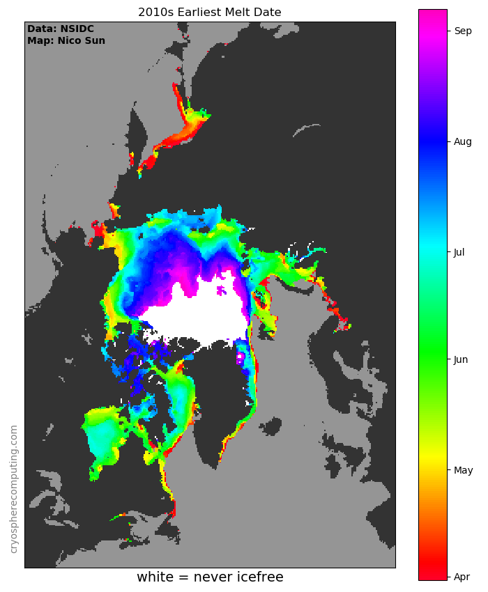
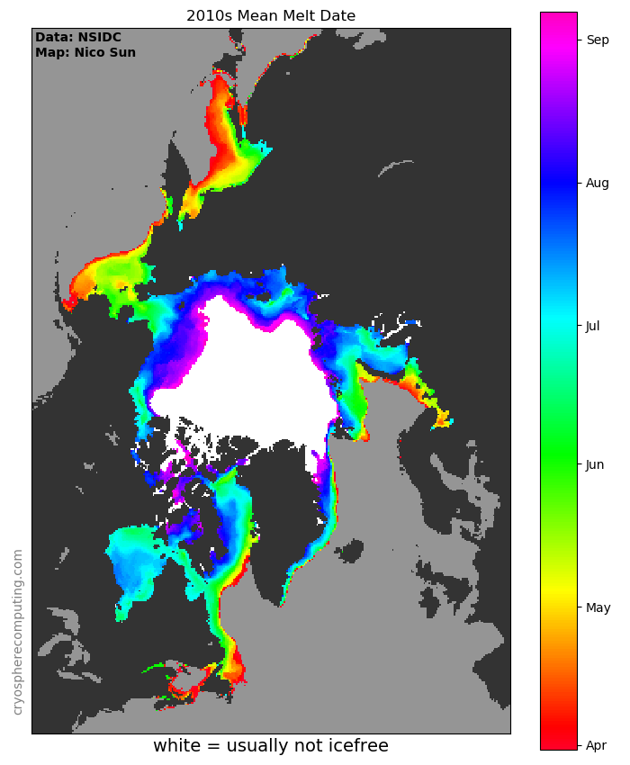
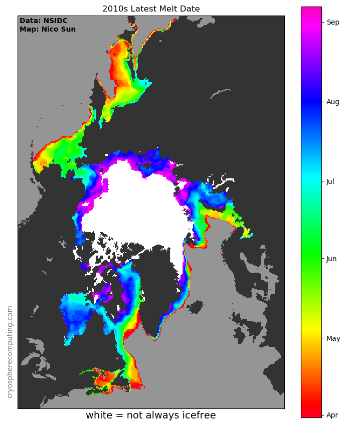

Arctic Melt & Freeze Dates
These maps show the variability of melting and freezing of sea ice over the last four decades.
On the earliest freeze map is significant noise from coastal measurement error, to a minor degree also present on the latest melt map.



Data used
Cavalieri, D. J., C. L. Parkinson, P. Gloersen, and H. J. Zwally. 1996, updated yearly. Sea Ice Concentrations from Nimbus-7 SMMR and DMSP SSM/I-SSMIS Passive Microwave Data, Version 1.1 Boulder, Colorado USA. NASA National Snow and Ice Data Center Distributed Active Archive Center. doi: https://doi.org/10.5067/8GQ8LZQVL0VL.